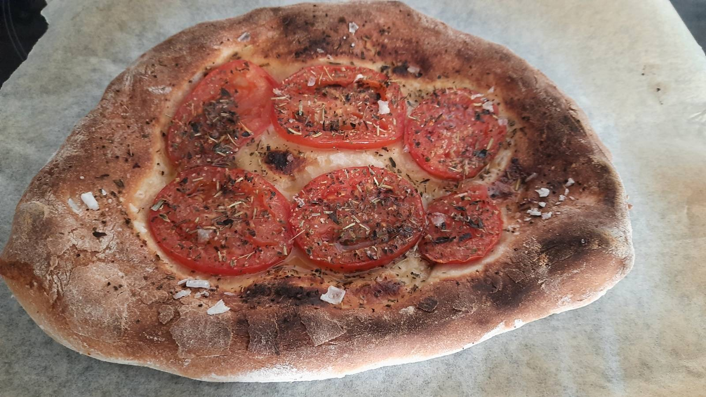

11 Focaccia

FOTO
Ingredientes
- Harina.
- Levadura.
- Sal.
- Azúcar.
- Aceite de oliva.
- Tomates.
- Orégano.
Preparación
- En un bol, mezclar harina, levadura, sal y azúcar. Añadir, poco a poco y mientras se remueve, un 65% de agua respecto a la cantidad de harina. Añadir un poco de aceite de oliva.
- Amasar con las manos hasta que la masa esté totalmente homogénea, y luego un rato más. Es normal que esté un poco pegajosa porque tiene mucha agua.
- Esperar hasta el día siguiente. Para hacer la receta hoy, tendrías que haber preparado la masa ayer.5
- Al día siguiente, cortar la masa en raciones individuales. Extender la masa sin tocar el borde, extendiendo siempre la parte central.
- Precalentar el horno en modo grill.
- Encima de la masa, añadir unas rodajas de tomate, orégano, aceite de oliva, sal en escamas y pimienta.
- Cocinar en el horno unos minutos, lo más cerca del grill que sea posible.
Arroz mexicano
Guacamole
Nachos
Hay que espabilar.↩︎